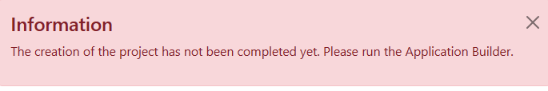
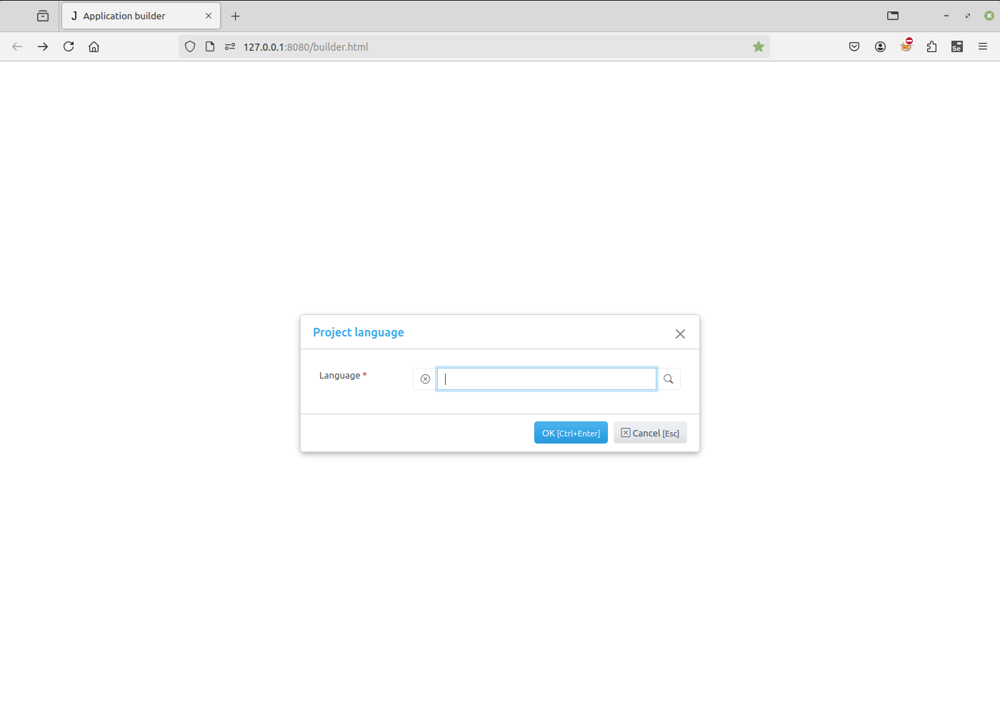
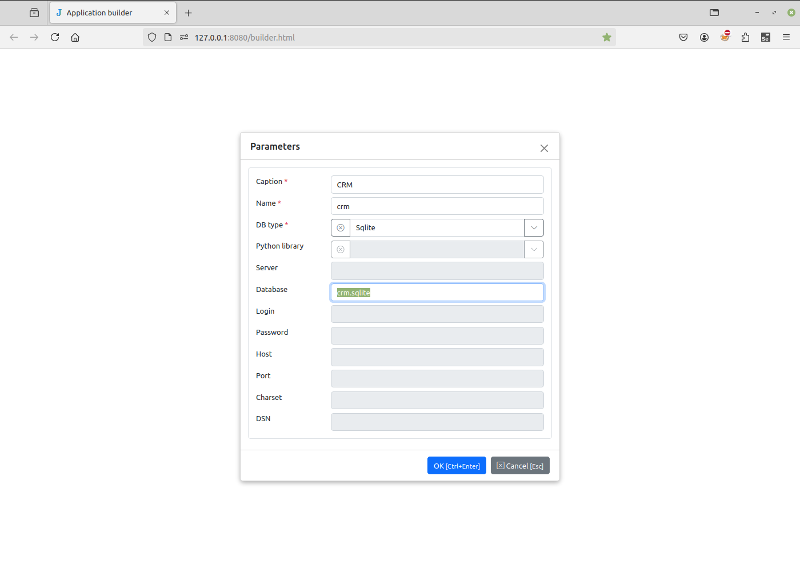
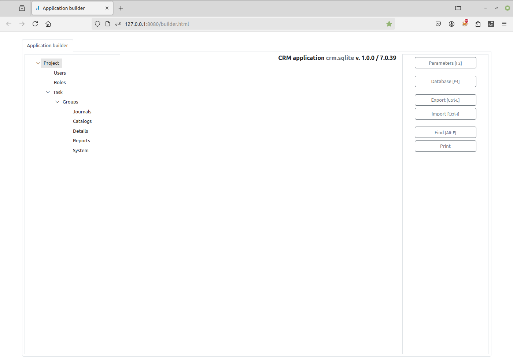
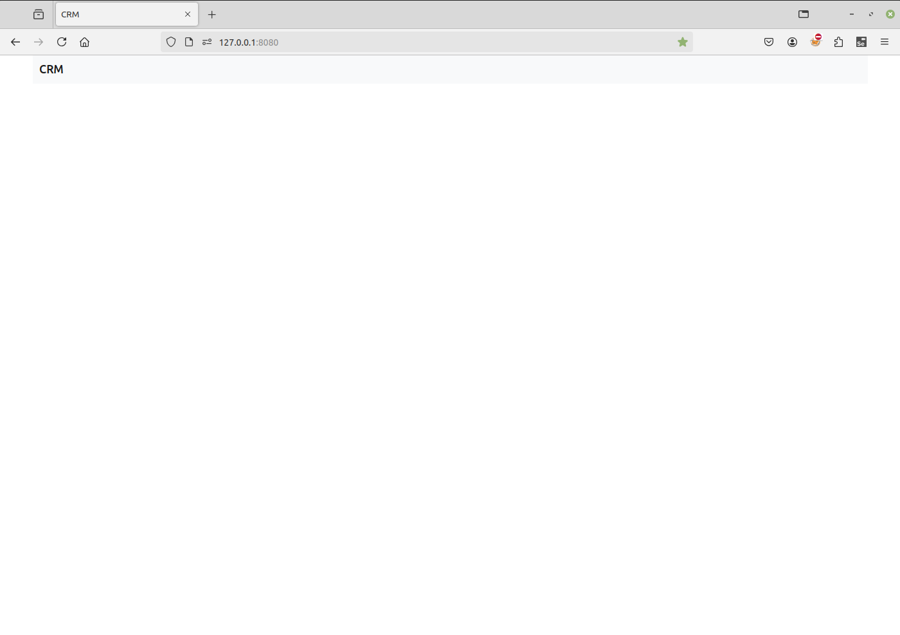

Creating a project¶
Create a new directory.
Go into the directory and run from command line:
$ jam-project.py
For Windows users, jam-project.py command is in Scripts folder, ie.
folder above this one:
...\> ..\project-name\Scripts\jam-project.py
The following files and folders will be created in the directory:
/
css/
js/
reports/
static/
locks/
admin.sqlite
langs.sqlite
server.py
index.html
templates.html
wsgi.py
To start the Jam.py web server, run the server.py script.
$ ./server.py
For Windows users:
...\>server.py
Note
You can specify a port as parameter, for example
$ ./server.py 8081
By default, the port is 8080. If you specify another port, you need to use it in your browser in the next steps.
You’ll see the similar output on the command line:
User Guide: https://jampy-docs-v7.readthedocs.io/
WARNING: This is a development server. Do not use it in a production deployment. Use a production WSGI server instead.
* Running on all addresses (0.0.0.0)
* Running on http://127.0.0.1:8080
* Running on http://127.0.0.1:8080
Press CTRL+C to quit
If we open a Web browser and visit the app, the below message will display:

Open a Web browser and go to “/builder.html” on your local domain – e.g.:
127.0.0.1:8080/builder.html
You should see the language selection dialog. This defines the language used for the user interface. You can select the language from the list of default languages, or import your own, using the “folder” icon to the right of the input field. See the Language support page for more information. Select your language and press the OK button.

Next is the new project dialog. Fill in:
Caption - the project name that will appear to users.
Name - the name of project (task) that will be used in the code (Python or JS) to get access to the task object. This should be a short and valid python identifier. This name is also used as a prefix when creating a table in the project database.
DB type - select a database type. If the database is not Sqlite, it must be created in advance and its attributes should be entered in the corresponding form fields. To see examples of Database setup, follow the link.

When you press OK, the connection to the database will be checked, and in case of failure an error message will be displayed.
Examples of database setups¶
Adapted from Jam.py Design Tips
Jam.py supports many different database servers. For example PostgreSQL, MariaDB, MySQL, MSSQL, Oracle, Firebird, IBM, SQLite, Databricks and SQLite with SQLCipher.
If you are developing a small project or something you don’t plan to deploy in a production environment, SQLite is generally the best option as it doesn’t require running a separate server. However, SQLite has many differences from other databases, so if you are working on something substantial, it’s recommended to develop with the same database that you plan on using in production.
In addition to a database backend, we need to make sure the Python database bindings are installed.
If using PostgreSQL, the
psycopg2orpsycopg2-binarypackage is needed.If using MySQL or MariaDB, the
MySQLdbfor Python 2.x is needed. For Python 3.x, themysql-connector-pythonandmysqlclientpackage is needed, as well as database client development files.If using MSSQL, the
pymssqlis needed.If using Oracle, the cx_Oracle is needed, as well as Python headers (development files).
If using SQLCipher (TBA),
sqlcipher3-binarypackage is needed for Linux. There is a standalone DLL for Windows available.If using IBM (TBA),
ibm_dbandibm_db_dbipackage is needed.If using Firebird,
fdbpackage is needed.If using Databricks,
databricks-sql-connectoris needed.To generate reports, LibreOffice must be installed.
Note
For SQLite databases, certain schema changes - such as deleting or renaming a field, or creating a foreign key - require the Application Builder to recreate the table. In this process, a new table is created and all records are copied from the original table into it.
Additionally, Jam.py does not support importing metadata into an existing SQLite project (i.e., a project with already created tables). Metadata can only be imported when creating a new project.
More about the database setups is within the Project management.
If all goes well, a new project will be created and the project tree will appear in the Application builder.

Important
As seen on top right corner, The Name of the application is displayed, name of the database used, application version number, and
Jam.py framework version number.
Open a new tab, type
127.0.0.1:8080
in the address bar and press Enter. A new project appears with an empty menu.
